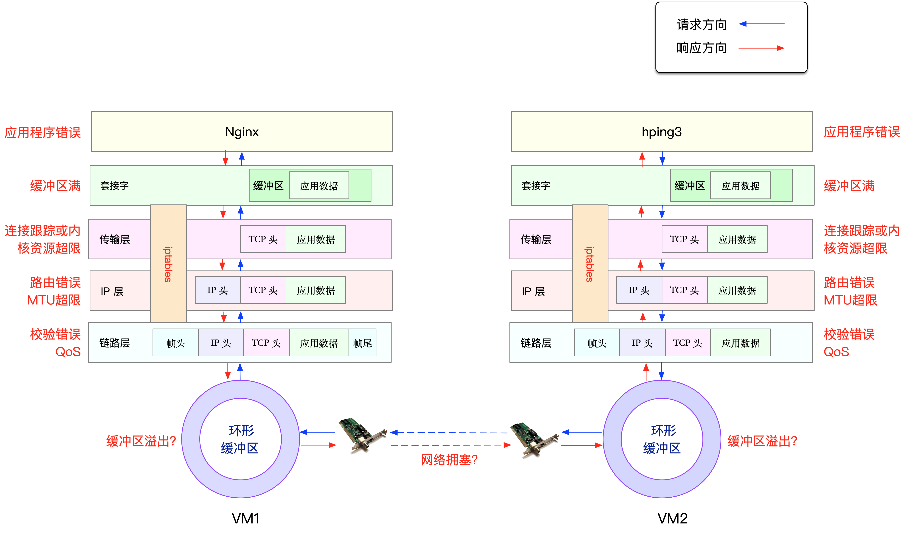
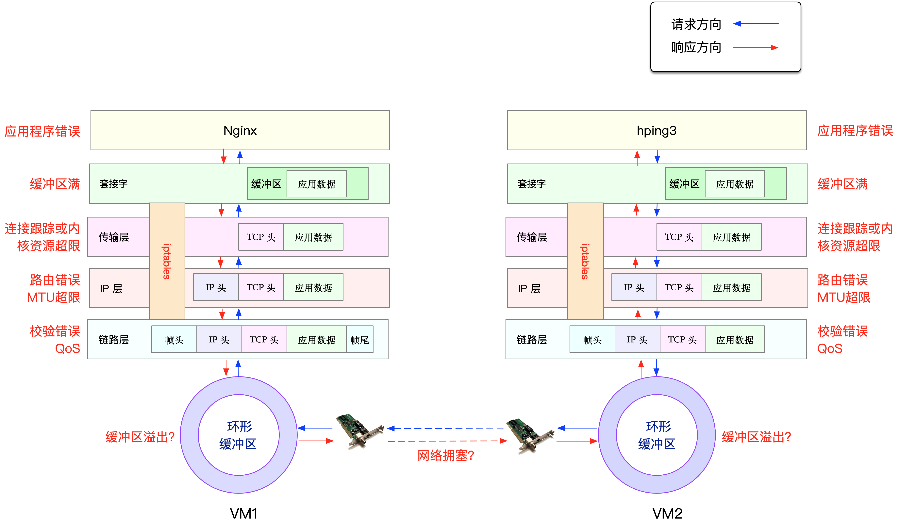

服务器丢包严重
网络丢包原理

- 查看链路层 netstat -i
- tc规则 tc -s qdisc show dev eth0
- 网络层和传输层 netstat -s
- iptabls -t filter -nvL 查看丢包
- 查看tcpdump然后看看netstat -i 查看有没有丢包

生命的意义是成为你自己！



ps -A -o stat,ppid,pid,cmd | grep -e '^[Zz]'


//void myprint(const int& i, char* buf) {
//存在主线程被回收,char* buf还没有转成string
void myprint(const int& i, const string& buf) {
cout << " i " << i << endl;
cout << "buf " << buf << endl;
}
thread th(myprint, var, A(var));
thread th(myprint, var, string(buf));
void myprint2(const A& buf) {
cout << "buf " << &buf << " thread_id " << this_thread::get_id() << endl;
}
thread th2(myprint2, var);
unique_ptr<int> u_ptr(new int(100));
thread th3(myprint3, std::move(u_ptr));

#include <iostream>
class Article {
public:
virtual void produce() = 0;
};
class Video {
public:
virtual void produce() = 0;
};
class CourseFactory {
public:
virtual Video* getVideo() = 0;
virtual Article* getArticle()= 0;
};
class JavaArticle : public Article {
public:
void produce() {
std::cout << " JavaArticl produce" << std::endl;
}
};
class JavaVideo : public Video {
public:
void produce() {
std::cout << " JavaVideo produce" << std::endl;
}
};
class JavaCourseFactory : public CourseFactory {
public:
Video* getVideo() {
return new JavaVideo();
}
Article* getArticle() {
return new JavaArticle();
}
};
class PythonArticle : public Article {
public:
void produce() {
std::cout << " PythonArticl produce" << std::endl;
}
};
class PythonVideo : public Video {
public:
void produce() {
std::cout << " PythonVideo produce" << std::endl;
}
};
class PythonCourseFactory : public CourseFactory {
public:
Video* getVideo() {
return new PythonVideo();
}
Article* getArticle() {
return new PythonArticle();
}
};
int main() {
CourseFactory* f1 = new JavaCourseFactory();
Video* v1 = f1->getVideo();
Article* a1 = f1->getArticle();
v1->produce();
a1->produce();
CourseFactory* f2 = new PythonCourseFactory();
Video* v2 = f2->getVideo();
Article* a2 = f2->getArticle();
v2->produce();
a2->produce();
}
package abstractfactory
import "fmt"
type Article interface {
produce()
}
type Video interface {
produce()
}
type CourseFactory interface {
getVideo() Video
getArticle() Article
}
type JavaArticle struct{}
func (j *JavaArticle) produce() {
fmt.Println("JavaArticle produce")
}
type JavaVideo struct{}
func (j *JavaVideo) produce() {
fmt.Println("JavaVideo produce")
}
type JavaCourseFactory struct{}
func (jc *JavaCourseFactory) getVideo() Video {
return &JavaVideo{}
}
func (jc *JavaCourseFactory) getArticle() Article {
return &JavaArticle{}
}
type PythonArticle struct{}
func (p *PythonArticle) produce() {
fmt.Println("PythonArticle produce")
}
type PythonVideo struct{}
func (p *PythonVideo) produce() {
fmt.Println("PythonVideo produce")
}
type PythonCourseFactory struct{}
func (py *PythonCourseFactory) getVideo() Video {
return &PythonVideo{}
}
func (py *PythonCourseFactory) getArticle() Article {
return &PythonArticle{}
}
import "testing"
func getArticleAndVideo(factory CourseFactory) {
factory.getArticle().produce()
factory.getVideo().produce()
}
func TestABSFactory(t *testing.T) {
var f1 CourseFactory = &JavaCourseFactory{}
getArticleAndVideo(f1)
var f2 CourseFactory = &PythonCourseFactory{}
getArticleAndVideo(f2)
}
from abc import ABCMeta, abstractmethod
class Article(metaclass=ABCMeta):
def produce(self):
pass
class Video(metaclass=ABCMeta):
def produce(self):
pass
class CourseFactory(metaclass=ABCMeta):
def get_article(self):
pass
def get_video(self):
pass
class JavaArticle(Article):
def produce(self):
print(type(self).__name__, " produce")
class JavaVideo(Video):
def produce(self):
print(type(self).__name__, " produce")
class JavaCourseFactory(CourseFactory):
def get_article(self):
return JavaArticle()
def get_video(self):
return JavaVideo()
class CppArticle(Article):
def produce(self):
print(type(self).__name__, " produce")
class CppVideo(Video):
def produce(self):
print(type(self).__name__, " produce")
class CppCourseFactory(CourseFactory):
def get_article(self):
return CppArticle()
def get_video(self):
return CppVideo()
class PythonArticle(Article):
def produce(self):
print(type(self).__name__, " produce")
class PythonVideo(Video):
def produce(self):
print(type(self).__name__, " produce")
class PythonCourseFactory(CourseFactory):
def get_article(self):
return PythonArticle()
def get_video(self):
return PythonVideo()
if __name__ == '__main__':
java = JavaCourseFactory()
java.get_video().produce()
java.get_article().produce()
cpp = CppCourseFactory()
cpp.get_article().produce()
cpp.get_video().produce()
from enum import Enum
import time
import datetime
class Status(Enum):
TO_BE_EXECUTE = 1
EXECUTED = 2
EXPIRED = 3
FAILED = 4
class RedisLockSvr(object):
@staticmethod
def get_instance(self):
return RedisLockSvr()
def generate_id(self):
return True
def unlock(self, id):
return True
def lock(self, id):
return True
def get_redis_lock():
return True
class WalletRpcService(object):
def move_money(self, id, buyer_id, seller_id, amount):
return True
class TransactionLock(object):
def lock(self, id):
return RedisLockSvr.get_instance().lock(id)
def unlock(self, id):
return RedisLockSvr.get_instance().unlock(id)
class Transaction(object):
def __init__(self, id, buyer_id, seller_id, product_id, order_id,
amount, wallet_trx_id):
self.fill_trx_id(id)
self.id, self.buyer_id, self.seller_id = id, buyer_id, seller_id
self.product_id, self.order_id = product_id, order_id
self.create_time_stamp = time.time()
self.amount = amount
self.status, self.wallet_trx_id = Status.TO_BE_EXECUTD, wallet_trx_id
def set_trx_lock(self, trx_lock):
self.trx_lock = trx_lock
def fill_trx_id(self, id):
if id != None and len(id) > 0:
self.id = id
else:
self.id = RedisLockSvr.get_instance().generate_id()
def is_expired(self):
cur_day = datetime.date.fromtimestamp(time.time())
create_day = datetime.date.fromtimestamp(self.create_time_stamp)
return cur_day - create_day > 14
def execute(self):
if self.buyer_id is None or self.seller_id is None or self.amount < 0.0:
return False
if self.status == Status.EXECUTED:
return True
try:
is_lock = self.trx_lock.lock()
if self.is_expired():
self.status = Status.EXPIRED
return True
rpc_service = WalletRpcService()
trx_id = rpc_service.move_money(self.id, self.buyer_id,
self.seller_id,
self.amount)
if id != None:
self.wallet_trx_id = trx_id
self.status = Status.EXECUTED
else:
self.status = Status.FAILED
return False
finally:
if is_lock:
self.trx_lock.unlock()
print('execute error')
class SubTransaction(Transaction):
def is_expired(self):
return True
if __name__ == '__main__':
buy_id, seller_id, product_id = 123, 234, 345
order_id = 456
trans = SubTransaction(None, buy_id, seller_id, product_id)
ret = trans.execute()
assert ret
assert trans.status == Status.EXPIRED